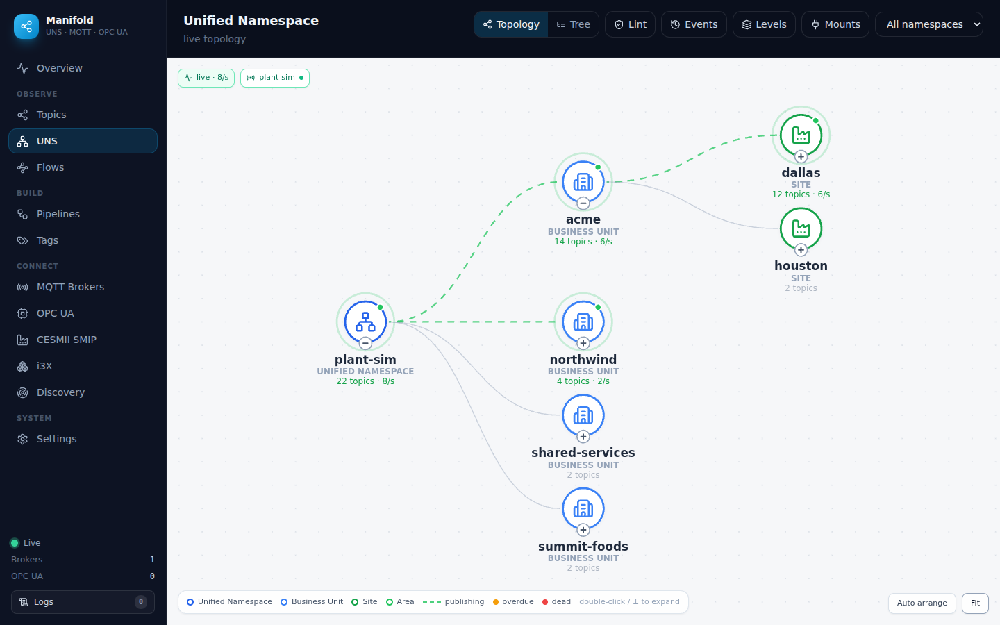
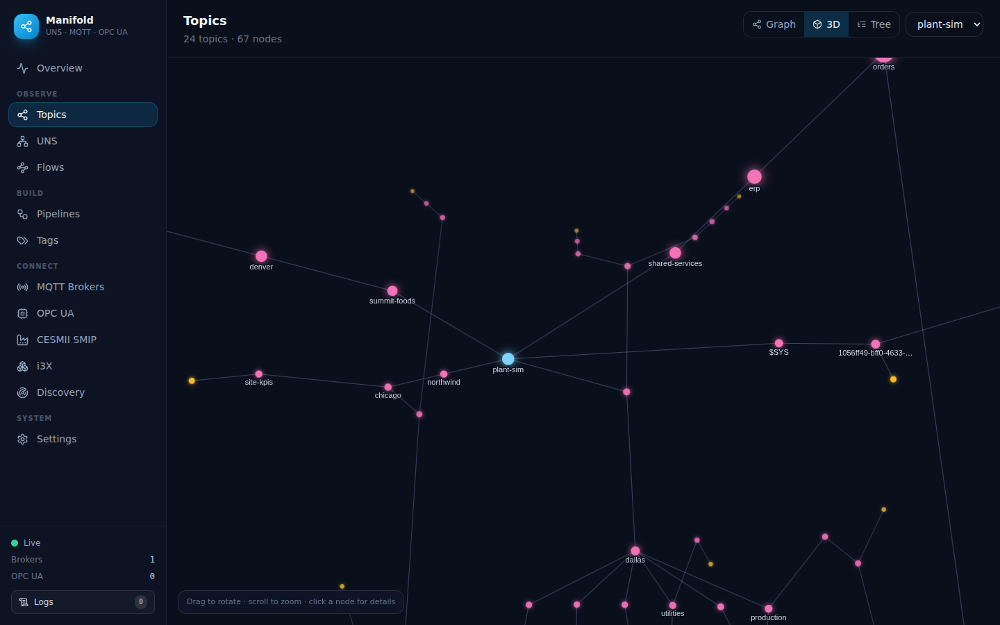
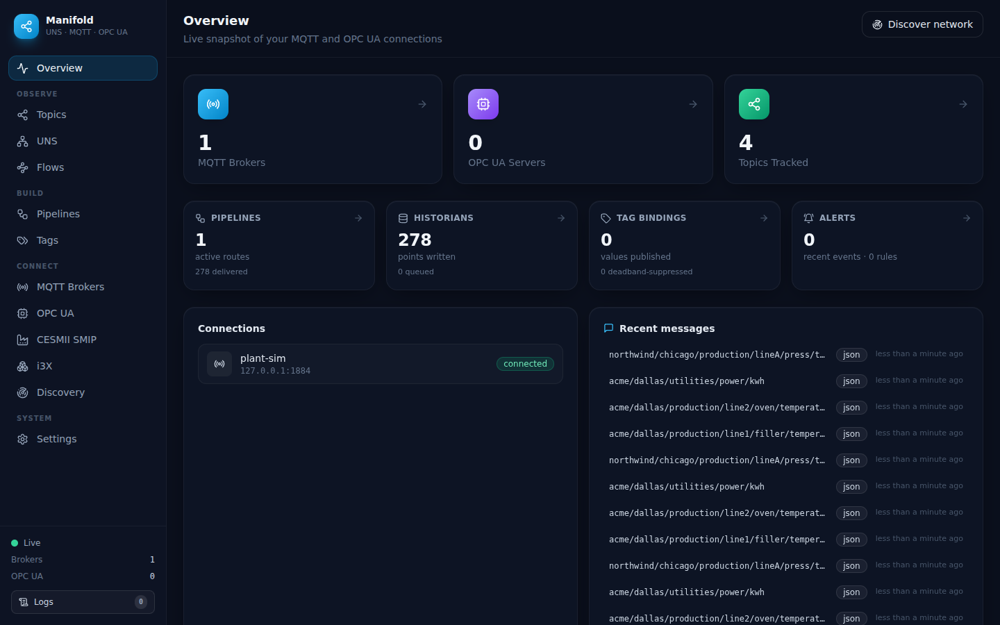
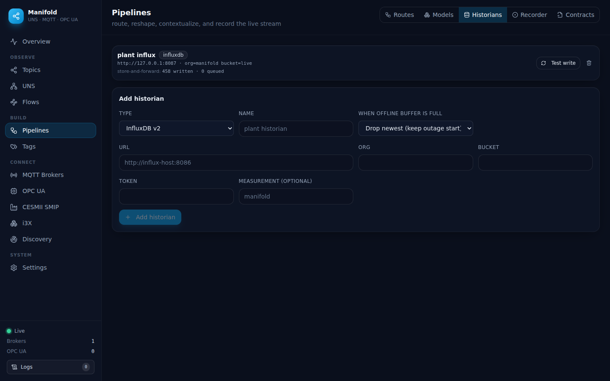

One live map of your
industrial data.
Manifold connects to your brokers and servers, streams their data in real time, and renders it as a live Unified Namespace — interactive topic and address-space graphs, and producer → topic → consumer lineage. A DataOps layer routes and reshapes the stream, and an MCP server exposes it all to AI agents.

Everything, in one place
Explore live protocols, unify them into a namespace, and shape the stream — no per-topic configuration, no fabricated data.
Explore
Live topic tree, 2D/3D graphs, and a WebGL renderer for 60k+ topics.
- MQTT 3.1.1 & 5 over tcp/tls/ws/wss, with
$sharesubscriptions - OPC UA address space with live values & secure connections
- JSON, text, binary & Sparkplug B payloads decoded
- Network discovery by CIDR scan with handshake verification
Unified Namespace
A live ISA-95 topology built from the traffic itself.
- Values on leaves, per-branch message rates, animated edges
- Namespace lint score with structural findings
- Per-topic staleness calibrated to each topic's cadence
- ~130 curated industrial icons + custom SVGs
DataOps
Route, reshape, contextualize, and store the stream.
- Pipelines: filter → transform chain → broker or historian
- Historians: InfluxDB, TimescaleDB, Timebase — store-and-forward
- Trends from a historian or a local recording — no DB needed
- Contracts, alerts (sustain + hysteresis), recorder & replay
Tags & Sparkplug
Browse device tags and publish them into the UNS.
- Unified tag browser: OPC UA, Sparkplug registry, MQTT trie
- Bindings publish as values, TVQ, or a Sparkplug B device
- Deadband + quality mapping, read-only toward devices
- Optional Sparkplug primary-host
STATE
Operations
Run it like the control plane it is.
- Fail-closed auth, named revocable tokens, read-only role
- Egress guard against SSRF / internal scanning
- Audit log, config-as-code export/import
- System health page over Prometheus
/metrics
MCP for AI agents
The same backend, exposed to any MCP client.
- 75 tools: MQTT, UNS, DataOps, OPC UA, CESMII, i3X
- Discover brokers, browse topics, read live payloads
- Drive pipelines and bindings programmatically
- Honors the same auth token as the API
See what your network is doing
Three views of every broker, all fed by the same live stream.



Running in minutes
Requires Node.js ≥ 20.19 (or 22+). No account, no cloud — it runs on your machine.
A Docker demo stack
Manifold + a broker + an OPC UA simulator + traffic, pre-wired — alive the moment it loads.
# broker, simulator, and traffic included docker compose up --build # open http://localhost:5000
B Prebuilt image
Just Manifold, published to GHCR on every release.
docker run -p 5000:5000 \ -v manifold-data:/data \ ghcr.io/zbest1000/manifold:latest
C From source
Client on :3000, backend on :5000 (proxied).
npm run install:all npm run dev
Built to be exposed carefully
Manifold is a control plane — it can publish to brokers, actuate equipment, and scan networks. It defaults to safe.
Fail closed, by default
With no token set, the server binds 127.0.0.1 only and says so — an accidentally-unauthenticated instance is never on the network. Turning that off is a deliberate act.
# require a token (recommended) MANIFOLD_AUTH_TOKEN=$(openssl rand -hex 24) npm start
- Named, revocable tokens with admin / read-only roles, enforced on REST and the socket.
- Egress guard blocks the scanner and outbound clients from loopback, cloud metadata, and (unless opted in) private ranges.
- Brute-force throttle and security headers on every entry point.
- Audit log of every mutation, with secrets redacted.
- Config as code — export/import the whole setup, secrets stripped.
Point it at a broker and watch the namespace build itself.
Open source under the MIT license. No telemetry, no accounts, no fabricated data.